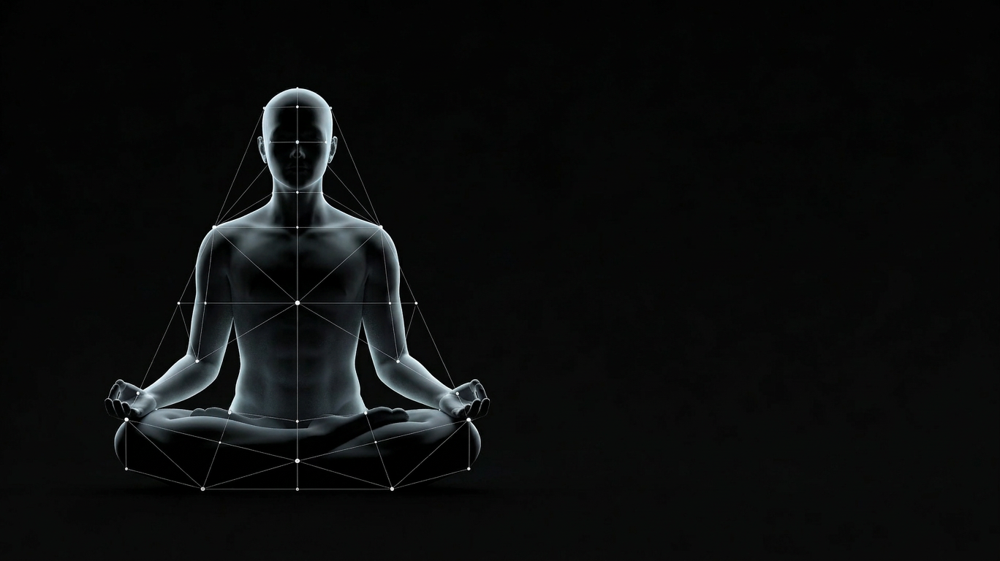
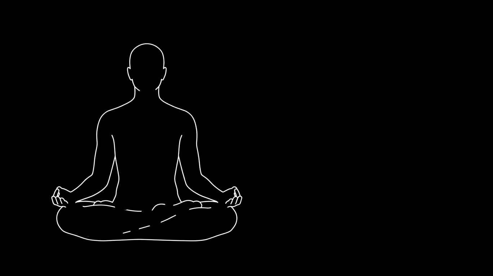
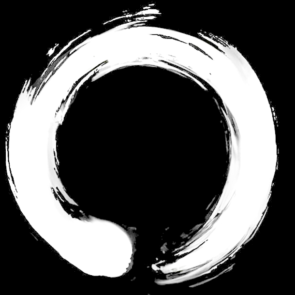

We are taught control.
It gave us planes, algorithms, antibiotics.
But not happiness. Not love. Not peace.
Because you are not a machine.
You are a society.
How do 30 trillion cells heal a wound without a commander?
Yogis called this 'body wisdom'.
Now it opens the door to regenerative medicine.
An intelligence arising from countless local encounters... you.
Where do your boundaries end?
Interbeing.
Your cells don't know where 'you' begin.
Neither do your ideas.
You are the air. You are your house.
You are the language you speak.
You are the unspoken rules of your culture.
Here, linear cause-and-effect breaks
down.
Change cannot come from any one – only from the system.
Buddhist tradition called this
dependent origination – Karma.
Instead, we map these causal webs mathematically
to support natural unfolding of minds and societies
This is emergence:
how systems flourish without anyone in charge.
Untangling it is tough (try dragging...)
We are building the scientific culture we wish
existed:
connecting rigorous science with contemplative wisdom.
Bayesian models of meditation.
Agency of collective imaginaries.
Relational construction of reality.
A new frontier of research, guiding a new way of being.

A research community bridging the mathematical rigor of complexity science with the lived depth of contemplative wisdom — independently arriving at the same description of reality.
Visit CSCSC →